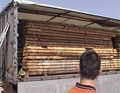

Recepción de materias primas, componentes y productos de madera y mueble.
La empresa XILOTECNOS es una sociedad anónima formada por tres socios, entre ellos Esteban.
Los tres son personas con titulación de Formación Profesional de la Familia de Madera, Mueble y Corcho. Tienen experiencia en diversas empresas, han realizado diversos cursos de Formación Continua y en el año 2005 crean XILOTECNOS, empresa de Fabricación e Instalación de elementos de carpintería y mobiliario.
Han ido aumentando su plantilla hasta 10 trabajadores, entre ellos Patricia, titulada de Grado Medio en Formación Profesional.
También han apostado por mejoras tecnológicas introduciendo una máquina de CNC además de maquinaria convencional y otras innovaciones.
La empresa colabora con Institutos a través de la Formación en Centros de Trabajo, Patricia después de la FCT fue contratada hasta la actualidad.
Ricardo es el alumno que realiza las prácticas de FCT va a tener como instructora a Patricia y como responsable de las prácticas a Esteban. Es su primer contacto con la realidad del mundo laboral.
Los protagonistas del caso práctico que te van a acompañar durante la travesía por toda la unidad son Ricardo, y Patricia y el grupo de empleados de esta "XILOTECNOS" entre ellos Gregorio "Goyo", un veterano trabajador de la empresa buen conocedor del almacén y sus problemas.
En esta unidad vamos a conocer la primera parte de todo proceso de almacenamiento, que es conocer los productos más habituales que se gestionan en las industrias de madera y mueble.
Como la cantidad de industrias y servicios que se dan en el entorno profesional de la carpintería y mueble es muy extensa, vamos a tener en cuenta una división esencial en este tipo de industrias:
- Industrias de primera transformación.
- Industrias de segunda transformación.
Luego volveremos a incidir en ambos tipos de industrias.
Otra clasificación muy general es la siguiente:
| FÁBRICAS | TALLERES | ARTESANOS E INSTALADORES |
|---|---|---|
|
|
|

1.- Manipulación y manejo de materiales en recepción. Control de calidad visual en la recepción de suministros.
Patricia está enseñando a Ricardo las instalaciones de la empresa. Llegan a una gran explanada enfrente de una nave industrial con una gran puerta de acceso.
Ricardo.- ¡Vaya aparcamiento que tenéis ahí enfrente!
Patricia.- Sí, es enorme, pero no podíamos hacerlo más pequeño porque los tráileres tienen que dar la vuelta para salir otra vez a la carretera general.
Ricardo.- Ya, no había tenido en cuenta que aquí se consume material a lo grande.
Patricia.-¡Y tanto! Dependiendo de los meses y el nivel de trabajo salimos a camión diario, sobre todo cuando nos encargan cercos de nudillo para obra.
Ricardo.- ¿El cerco de nudillo es lo que también se llama precerco?
Patricia.- Y antecerco, la verdad es que con los nombres tenemos problemas, cada uno llama a las cosas de una manera y todos tenemos razón. ¡Mira quién viene por ahí!
Ricardo.- ¿Por dónde?
Patricia.- Por la carretera, aquel tráiler viene para acá, así que tenemos que ir saliendo de la explanada, estamos en zona reservada para camiones, mira la señal del suelo.
Ricardo.- Salgamos de aquí, no me gusta que me planchen la camisa con una rueda de camión.
Patricia.- Como plancha es efectiva, pero deja demasiadas marcas ¿no?
{kind=link}
Como decíamos antes en el apartado de la introducción, vamos a definir de forma sencilla la división de industrias en el sector.
- – Industrias de primera transformación: son las que recogen la materia prima: árboles, troncos, restos de aserrado y realizan la primera transformación del material.
Se organizan en dos grupos principales: aserraderos y fábricas de tableros
- – Industrias de segunda transformación, que utilizan para su actividad materia prima ya elaborada por otros procesos anteriores, aquí la diversidad de industrias es muy amplia, pero para establecer una idea de trabajo, vamos a intentar agruparlas, empezando por las fábricas de tamaño medio y progresivamente acercándonos a pequeñas unidades de trabajo como son los instaladores, que muchas veces no tienen ni taller, ni local para trabajar, haciendo toda su labor en casa del cliente.
1.1.- Tipos de productos.
La variedad y cantidad de productos que se utilizan en madera y mueble es muy grande. Explicar aquí los diferentes tipos nos llevaría mucho tiempo y espacio. Junto a esto, conviene tener en cuenta que organizativamente y normativamente no están estructurados los productos. Además esta información está desarrollada con detalle en otros módulos del Ciclo Formativo. Por lo que en este apartado sólo vamos a indicar los productos por grupos de materiales como son:
- - Tablones y madera maciza. Piezas de mucho volumen y peso.
- - Tableros. Piezas de mucho volumen, poco espesor y manipulado difícil.
- - Productos manufacturados: puertas, ventanas, muebles, escaleras, etc. Productos empaquetados y delicados de trato.
- - Lacas, barnices y otros productos de acabado. Productos líquidos, con posibles riesgos tóxicos.
- - Herrajes y herramientas. Materiales de mucho peso y pequeño tamaño.
A continuación vamos a explicar grupo por grupo.
{kind=link}
Dentro del Control de Almacén, nombre de nuestro módulo y dentro de los procesos a analizar tendremos que tener en cuenta la importancia del transporte de materiales y para ir recordándolo aquí tienes una imagen relacionada con ello.
1.1.1.- Madera maciza.
Dentro de este apartado vamos a considerar el material más importante en el mundo de la madera y el mueble: la madera maciza, considerando como madera maciza a todos aquello productos obtenidos de la madera y que mantienen la estructura original de esta, sin sufrir transformaciones estructurales de relevancia.
Dentro de este concepto vamos a incluir los siguientes productos:
Arquitectura y construcción.
- Vigas de madera: piezas enterizas de madera, con dimensiones por encima de los tres metros de largo y con gruesos y anchos variables, en general a partir de 15 cm.
- Viguetas: vigas de pequeño tamaño, o con secciones menores, alrededor de los 10 cm.
- Tablas, alfarjías, latas o ripias, regruesos, etc.
- Vigas de madera laminada.
Usos ajenos a industrias del mueble.
- Madera en rollo: es una definición técnica de la industrias de la madera, se denomina así porque consiste en troncos de madera, descortezados con mayor o menor detalle, y que, cortados en largos variables se utilizan para diversas industrias, aunque no para mobiliario. Dentro de madera en rollo se establecen los siguientes términos:
- Troza: sección (pieza) de un tronco ya apeado, puede dedicarse a papel, tablero, chapa de madera o tablones.
- Rollizo: troncos pequeños que se destinan (mediante elaboración o trituración) a tablero y también como ornamento en arquitectura, jardinería, etc.
- Apea: materiales de largos y espesores variables utilizados en minería.
- Postes: trozas de troncos, de diámetros alrededor de los 20 cm, que se utilizan para conducciones de luz o similares.
- Estacas: troncos de pequeña sección y largos alrededor de 1 metro, que se utilizan para cercados y vallas agrícolas.
Carpintería y mueble.
- Tablones: piezas de sección rectangular, con espesores a partir de 52 mm.
- Cachones: son piezas de madera obtenidas del corte de tronco sin escuadrar los cantos, también se les denomina tablones sin cantear.
- Tabloncillo: tablones de menor sección y largo.
- Tabla: pieza de sección rectangular, de espesores menores de 38 mm.
- Largueros: tablones de sección casi cuadrada, con secciones alrededor de 5- 8 cm.
{kind=link}
1.1.2.- Tableros.
Definir tablero de madera es complicado se pueden definir como productos elaborados a partir de madera maciza que se transforman en objetos de poco espesor y grandes largos y anchos.
El tablero viene a solventar una de las grandes dificultades de la madera maciza, obtener grandes superficies planas y estables.
Los tipos de tableros son muchos, una posible enumeración, sería la siguiente:
- Tableros de madera maciza: alistonado, enlistonado, tricapa, madera contralaminada.
- Tableros contrachapados: con las caras orientadas consecutivamente a 90º, o todas al hilo “tableros de malla”.
- Tableros de virutas orientadas (Oriented Strand Board, OSB).
- Tableros de partículas. Conocidos como aglomerados. Una variedad es el tablero extrusionado, pensado para aligerar el peso del tablero.
- Tableros de fibras duros (Hard Board, HB).
- Tableros de fibras semiduros, de alta o baja densidad (MB).
- Tableros de fibras de densidad media (DM, MDF).
- Tableros de fibras blandos (Soft Board, SB).
- Tableros de lino.
- Tableros de fibras aislantes.
- Tableros de madera – cemento. Partículas de madera aglomeradas con cemento.
- Tableros mixtos fibras – partículas. Alma de partículas y caras de fibra.
- Tableros o paneles sándwich. Esta familia tiene una gran variedad de tableros.
- Composites: es un término nuevo, que sirve para definir a productos constituidos por una amalgama de serrín de madera y resinas plásticas. Por ejemplo la mezcla de partículas de madera y polipropileno.
- Tablero rechapado: tablero de fibras o virutas revestido de chapa natural.
1.1.3.- Productos manufacturados.
Vamos a considerar a productos manufacturados a materiales ya elaborados en algún proceso industrial previo y que están preparados para instalarse en su ubicación definitiva.
Son entre otros los siguientes:
- Puertas, desmontadas o en block (el conjunto de la puerta viene montado completo, con herrajes y cerradura, sólo le falta instalarse en obra).
- Ventanas. Montadas y sin montar.
- Elementos de escaleras: pasamanos, balaustres, zanquín o pilarote, zancas, etc.
{kind=link}
Elementos de muebles de cocina: puertas, encimeras, cajones, módulos (cascos) de muebles, etc.
{kind=link}
- Muebles para montar: librerías, camas, aparadores, etc.
- Molduras, listones, varillas, marquetería, etc. para actividades de bricolaje.
1.1.4.- Lacas y barnices.
Un grupo muy importante de productos que forman parte del mundo de la carpintería y mueble son los productos de acabado, barnices y lacas en sentido amplio.
Tradicionalmente estos materiales se vendían en tiendas especializadas: almacenes de pinturas y ferreterías. Hoy en día, muchos de estos productos se venden en bloque junto con los productos de madera: almacenes de tablones y tableros, tiendas de bricolaje, etc.
Los productos serían, en esencia junto a otros, los siguientes:
- Barnices para interior y exterior.
- Barnices pigmentados, lacas y pinturas.
- Lasures y productos de impregnación de madera de exteriores.
- Aceites y ceras.
- Disolventes.
- Decapantes y productos de limpieza.
- Materiales para su aplicación: rodillos, brochas, etc.
- Materiales de seguridad: guantes, gafas, mascarillas, etc.
Junto a esto, conviene tener en cuenta que las empresas de segunda transformación de carpintería y mueble, además de fabricar el elemento, aplican sobre este el acabado final, es decir, las fábricas modernas realizan los muebles, ventanas, puertas, suelos, etc. Y además los barnizan para presentarlos completamente terminados al cliente final.
En esta página se observa una composición con botes de pintura de diferentes colores.
Existe una gran variedad de colores dentro de los barnices pigmentados y de las pinturas. Para las empresas es muy importante que el color sea totalmente homogéneo. Si es necesario obtener un color determinado se puede conseguir utilizando cartas de colores o mediante herramientas digitales que identifican un color determinado.
¿Te imaginas que en una cocina lacada de color blanco, algún módulo tenga un tono algo diferente?
¿Y qué ocurre si el grado de brillo de alguna parte del mueble es diferente al resto?
1.1.5.- Herrajes y herramientas.
El último grupo básico de materiales empleados en carpintería y mueble son dos grupos muy diferentes de elementos por su destino y función, pero que debido a su composición, materiales metálicos, se almacenan juntos.
Son los herrajes y las herramientas.
Herrajes
Los herrajes son, en esencia, el grupo de materiales, normalmente metálicos, que sirven para completar el proceso de fabricación de productos de carpintería y mueble. El conjunto de productos utilizados es amplísimo, pero se pueden agrupar en los bloques siguientes:
- De fijación: clavos y tornillos.
- De giro: bisagras, pernios, bisagras de seguridad.
- De cierre: cerraduras, pomos, de seguridad, imanes, silenciosos.
- De corredera: de puertas de paso, armarios, muebles, etc.
- De muebles de cocina: bisagras de cazoleta, copetes, correderas de cajón, cuberteros, etc.
- Específicos de ventanas: pernios, cremonas, fallebas, españoletas.
- De unión de piezas: escuadras, herrajes de camas, de unión de tableros.
- De fijación de puertas: imanes, pasadores por tabla y por canto, etc.
- De estructuras arquitectónicas de madera: pernos, bridas, conectores, bulones, coronas de pernos, etc.
- Apliques y guarniciones: bocallaves, manivelas, tiradores, cazoletas, adornos de metal y cuero, etc.
Herramientas
- De mano: martillos, tenazas, destornilladores, formones, abrasivos, cepillos y garlopas, gramiles, serruchos, etc.
- Electroportátil: garlopas eléctrica, fresadoras, taladros, destornilladores, engalletadora, etc.
- Estacionaria: sierras de cinta, labras, regruesadoras, tupís.

1.2.- Control de calidad visual en la recepción de suministros.
Ricardo está realizando prácticas en una nave que es el almacén de la empresa.
Paco.- ¡Niño, ven para acá, que ha llegado el inspector!
Paco, más conocido como “el civilón” por su porte autoritario y por el enorme mostacho que adorna su cara, a la manera de un personaje de zarzuela.
Ricardo.- ¿Qué inspector, el de hacienda? - Con apariencia de tranquilidad.
Paco.- Tú mismo. -Mientras le señala el volquete de un camión con una pila de tablones de varios tamaños situada encima.
Ricardo.- ¿Y qué tengo que inspeccionar?
Paco.- ¿Tú qué crees?
Ricardo.- Vale me sacrificaré por la empresa. ¿Me subo al camión, supongo?
Paco.- - Efectivamente, tenemos un pedido de roble y de cerezo, vamos a ver cómo ha llegado la madera. Vas mirando uno por uno, mides el largo, el ancho, y el grueso, y me dices como viene de limpio.
Ricardo.- ¿Y cómo tiene que venir?
Paco.- Sin nudos, ni fendas, ni manchas de hongos, por decirlo de alguna manera es calidad de primera.
Ricardo.- Estos tablones de arriba tienen buena pinta.
Paco.- No te fíes, dales la vuelta. Venga vete midiendo y que Goyo te ayude a bajarlos.
La mayor parte de la información que reciben las personas procedentes del exterior, llega a través de la vista.
La inspección visual es el ensayo no destructivo por excelencia, ya que no produce daño alguno a los materiales y es una de las actividades más antiguas en los sectores industriales.
También es interesante que tengas en cuenta que no existe ningún proceso industrial en que no esté presente el control o inspección visual.
Pero lo que está claro, es que se necesitan unos conocimientos previos que deben ser conocidos para ser aplicados de forma correcta. Así que Ricardo tiene que ir aprendiendo y Paco le tiene que enseñar.

1.2.1.- Parámetros de calida de la madera maciza.
Determinar la calidad de la madera, es decir, definir que madera es mejor o peor es complicado por la variedad de criterios que existen.
El primer criterio es separar la madera por especies, es decir, hay especies de madera que se consideran mejores o peores que otras, pero siempre valorando su finalidad.
Por ejemplo: la madera de ébano es mejor para mueble de lujo que la madera de chopo, pero si hablamos de bastidores de mueble tapizado, la madera de ébano es inservible puesto que no se pueden grapar los tapizados, en cambio el chopo, madera barata, es muy bueno como bastidor para mueble tapizado.
El segundo criterio es por su finalidad, es decir, madera para mobiliario y madera para uso estructural, entendiendo esta última como madera para uso en vigas, vigas laminadas y estructuras que soportan peso. Por ejemplo la madera de raíz o verrugas es carísima y sólo se aplica, en chapa, a mueble de lujo o instrumentos musicales. Y, en uso como soporte, no valdría para nada puesto que no puede soportar tensiones.
Calidad de la madera para uso estructural.
La madera estructural, es decir, aplicada en la construcción tiene que cumplir la norma UNE 56.544:2003. La clasificación se realiza mediante la exploración visual de dimensiones y de defectos (nudos, fendas, desviación de la fibra, etc.). Se aplica sobre todo a las coníferas: pinaster, radiata, nigra, sylvestris.
En esta norma se establecen dos calidades:
- ME1 Madera estructural de primera. Es la que tiene mejor calidad.
- ME2 Madera estructural de segunda, de peor calidad.
- Madera de rechazo: toda aquella madera sin clasificar no puede utilizarse en estructuras.
El tercer criterio es el más importante y consiste en que dentro de la misma especie de madera, y dentro de la misma finalidad y uso; determinar que tablón tiene más calidad que otros.
El sistema tradicional de clasificación, utilizada habitualmente en aserraderos, almacenes de madera y profesionales de la carpintería y el mueble; establece cuatro o cinco categorías para los tablones que es aproximadamente la siguiente:
- 1ª (primera) Especial, o clase extra: caras y cantos limpios, libres de defectos, fibra recta.
- 1ª (primera): Fibra recta, dos caras y un canto limpio.
- 2ª (segunda): Una cara y un canto limpios.
- 3ª (tercera): Nudos pequeños en todas las caras.
- 4ª (cuarta): Resto.
El criterio se basa, o se basaba puesto que hay normas actuales que lo sustituyen, en la exploración visual, es decir, se mira cada pieza de tablones y un especialista cuantifica los nudos y su tamaño, la disposición… también otros defectos tales como: fendas, gemas, agallas o bolsas de resina, fibra revirada, acebolladuras, ataques de hongos.
{kind=link}
1.2.2.- Parámetros de calidad en tableros.
Los sistemas de clasificación de los tableros por su calidad tienen un procedimiento diferente al de la madera maciza. Es decir, en la madera maciza se consideran de mejor o peor calidad una especie de madera sobre otra, además de otras variables que detallamos en el capítulo anterior.
En el caso del tablero la calidad se entiende a partir de familias de productos, por ejemplo: tablero contrachapado: el de mejor calidad está constituido por mejores chapas (chapas limpias), y el de peor calidad tiene en su composición chapas con defectos: nudos, grietas (fendas), pequeñas perdidas de calidad, etc.
Además de esto los tableros se clasifican en:
Uso estructural en edificaciones
Son tableros que van a formar parte permanente del edificio (no se consideran aquí tableros para encofrados, andamios, etc.). En este caso, la normativa es la general para todo tipo de materiales que se destinan a edificaciones (casas).
Esta normativa es:
- la Directiva Europea de Productos de la Construcción (DCP), que implica el marcado CE en los tableros, o en los paquetes de tableros.
- El Código Técnico de Edificación (CTE).
Uso no estructural en construcciones ni edificios
Se les denominan "tableros para otras aplicaciones diferentes a la construcción". En este caso el tablero no necesita el marcado CE. Pueden ser tableros destinados a cerramientos de obras, a cajas y embalajes, etc.
{kind=link}
Comprobación visual de los parámetros de calidad en tableros derivados de madera. Aquí tienes unas observaciones a tener en cuenta. Normas de uso.
1.2.3.- Control visual en productos manufacturados.
La gran variedad de productos dificulta establecer un patrón común.
El planteamiento inicial, a la hora de almacenar estos productos es el siguiente:
- Cada unidad se empaqueta individualmente, puerta a puerta, ventana a ventana, etc. Ya que el embalaje sirve desde la fábrica hasta su destino final en casa del cliente.
- El embalado debe permitir el apilado de los elementos sin necesidad de la colocación de rastreles protectores puesto que no se garantiza que en algún momento de la cadena de ventas alguien coloque o apile mal el producto y lo estropee. Ya sea en la fábrica, el transporte, la tienda, el instalador, etc.
- Muchas veces los elementos vienen ya con su acabado final, por lo que no pueden sufrir ningún deterioro, ya que si se rayan, marcan, o golpean difícilmente se pueden reparar si ya están barnizados.
Los datos de control del material: tipo de mercancía, proveedor, origen, código de barras, etc. Deben de estar visibles, y a ser posible, dentro del empaquetado para evitar su pérdida o deterioro.
Medidas de control visual.
- Comprobar que el empaquetado no está deteriorado, plásticos y protectores rotos y con desgarros, etc.
- Comprobar que los paquetes no presentan zonas aplastadas, por golpes, mal apilado y tensado de flejes protectores, etc.
- Comprobar que no existen condensaciones dentro de los embalajes o blíster, que indiquen la presencia de humedad y por tanto hinchazones y mermas y ataques de hongos.
- Comprobar que no existen manipulaciones extrañas en la hoja de datos con la identificación del producto, ya que pueden haberse cambiado los códigos por error, y eso supondrá, la devolución del producto por parte del cliente.
{kind=link}
1.2.4.- Comprobación visual de lacas y barnices.
La secuencia final de producción de materiales de carpintería y mueble es el acabado de las piezas. La gama de productos de acabado es muy amplia y sus características son muy diversas.
Para intentar ordenar este mundo tan variado vamos a establecer tres grupos:
- Productos protectores del interior de la madera: sales, resinas en base agua, aceites.
- Productos de imprimación en exterior: lasures y derivados de estos.
- Productos de acabado, barnices y pinturas. Y dentro de estos:
- Aceites y ceras
- Barnices reversibles: goma laca, nitrocelulósicos.
- Barnices y pinturas catalizables: poliuretanos (PUR), poliésteres, resinas epoxídicas, etc.
{kind=link}
En la mayoría de los casos, los productos vendrán envasados en recipientes de plástico o metal, convenientemente etiquetados, y protegidos. Es importante tener en cuenta que los productos catalizables suelen llevar dos componentes, la resina y el reactivo, que van envasados en recipientes separados pero forman parte de la misma mezcla, por lo que deben de mantenerse juntos.
Comprobación visual en lacas y barnices.
Antes de iniciar cualquier proceso industrial se deben tomar las medidas de seguridad pertinentes, y en el caso de los productos químicos son especialmente importantes, una vez garantizada la seguridad deberemos comprobar:
- Si los recipientes vienen golpeados o presentan posibles fisuras.
- Si los cierres, tapones, tapas, etc. Están intactos y no presentan signos de manipulación.
- Si vienen paletizados y embalados con film plástico que los productos mantienen su equilibrio y los palés no están deteriorados, para evitar que se caigan cuando procedamos a su manipulación.
- El etiquetado debe ser correcto figurando:
- El nombre del producto.
- La empresa fabricante.
- La composición, indicando especialmente si contiene disolventes tóxicos y/o nocivos.
- Pictogramas e indicaciones con los riesgos de uso, y medidas de seguridad en su manipulación.
- En el caso de productos inflamables, y volátiles es muy importante valorar su temperatura, pueden haber estado almacenados al sol, y son productos que, en condiciones extremas pueden explotar.
1.2.5.- Comprobación visual en herrajes y herramientas.
Los herrajes y tornillería de madera se empaquetan y distribuyen de manera muy desigual, condicionados por el cliente final al que están destinados.
Se pueden establecer tres tipos de paquetes:
- Paquete pequeño destinado a cliente minorista, normalmente se colocan en cada caja de 1 a 10 piezas.
- Paquete destinado a taller profesional pequeño, cajas de 10 a 100 piezas.
- Paquete para uso en gran industria: cajas de 100 a 10.000 piezas.
Esta clasificación es muy incompleta puesto que la infinidad de productos hace esta tarea imposible, pero nos sirve para hacernos a la idea de los múltiples sistemas de empaquetado que las empresas fabricantes deben de aplicar a sus productos para lograr ahorros en los costes de empaquetado de las piezas.
Pensemos que, por ejemplo, colocar en blisters de plástico unidades de 10 escarpias y servirlas a una empresa que necesita 10.000 unidades implica usar 1.000 blister que suponen un coste espúreo puesto que la empresa que necesita los herrajes no tiene que usar ese sistema de empaquetado. Ya que el blíster es un sistema de paquetes destinado a ferreterías y venta a particulares.
Junto a esto, normalmente los herrajes y sobre todo las herramientas tienen gran peso, lo que implicaría para su traslado y almacenamiento usar paquetes de calidad robustos y reforzados que encarecen el producto. Y estos elementos tienen que ser muy competitivos en el precio.
Estas dos razones explican que los paquetes cumplan los requisitos mínimos de eficacia para los que están destinados. Las cajas serán de cartón, y las unidades vendrán colocadas de diferente manera si van a ser expuestas y vendidas en público (se usarán blíster), o si se van a utilizar por las empresas para otros usos posteriores. En estos casos se usarán cajas de cartón flejadas con tiras de plástico que aseguren un mínimo de calidad en el transporte. Puede, incluso, darse el caso de que por ejemplo la tornillería venga en grandes cajas, empaquetada a granel, con miles de piezas dentro.
Todo esto implica dificultades tanto de uso, como de traslado y colocación en el almacén, de todas maneras se pueden establecer los siguientes controles de calidad:
- Las cajas o paquetes aparecen sin desperfectos, con los cantos vivos y sin marcas de golpes o aplastamientos.
- Las cajas no presentan marcas de agua, de lluvia, chorreaduras y deterioro por humedad.
- Los paquetes presentan correctamente el etiquetado, sin pérdida de etiquetas o pegatinas de códigos de barras.
{kind=link}
2.- Recepción de artículos para técnicas de producción “justo a tiempo”.
Ricardo está realizando sus prácticas de FCT . Se encuentra en la sección de almacén, esta vez su compañero de trabajo se llama Goyo.
Goyo.- ¿A ti te gustan las atracciones de feria?
Ricardo.- Como a todo el mundo- Buscando una respuesta neutra que le permita salir del paso, hasta ver por dónde va Goyo.
Goyo.- Pues aquí tenemos de todo, hasta un carrousel.
Ricardo.- Me alegro- esperando a ver si sale el sol o llueve.
Goyo.- Hale vamos a verlo. Ambos se encaminan a otra parte de la nave. Allí se encuentran una zona grande separada del resto por unos enrejados metálicos.
Goyo.- Esta zona es la de reparto de pedidos, aquí distribuimos paquetes de piezas que van al resto de las zonas de montaje, son todos los herrajes que lleva cada pedido individualizado.
Ricardo.- ¿Y cómo controláis todo esto?
Goyo.- Mediante estos carrouseles, aquí van colocadas las piezas en estantes automatizados por calles, de arriba abajo y por alturas, de manera que a cada hueco le corresponde una pieza determinada. Cuando se marca la pieza en el lector de códigos, ahí delante, donde las bandejas, el carrousel gira, y deja justo delante del operario la pieza que necesita, coge la cantidad solicitada, confirma la elección, y automáticamente el carrousel gira para presentarle la siguiente pieza de la lista de materiales informatizada.
Ricardo.- Impresionante, ¿Y cuál es la finalidad de este sistema tan complejo?
Goyo.- Fundamentalmente ahorrar tiempo. Aquí la lista de piezas y materiales se completa rápido, y luego, en montaje, cada operario, o cada mueble tiene en esas bandejas las piezas justas que necesita, de manera que el proceso es más rápido y, además, no andan por los talleres piezas sueltas, sobrantes, pérdidas, etc.
Ricardo.- Vamos, que no se pierde ni un tornillo.
Goyo.- Además esas piezas ocupan sitio y como consecuencia suponen un dinero.
{kind=link}
Antes de ver aspectos de la gestión de almacén, reflexiona sobre la siguiente frase.
La "fábrica mínima". Si hay existencias permanentes no necesarias, detrás de éstas hay un exceso de personal y de equipo.
2.1.- ¿Qué es “just in time o JIT”?
El just in time, o lo que es lo mismo, sólo cuando toca, o sólo cuando se necesita, es un término inglés para indicar un tipo de almacenaje moderno.
Este tipo de gestión de existencias busca limitar al máximo el número de piezas que tiene la cadena de producción en almacén, o almacenadas en los diferentes procesos de fabricación. El JIT llevado a sus últimas consecuencias vendría a presentar un tipo de producción en la que no existen piezas sueltas de almacenamiento. Es decir almacén cero.
Supongamos una fábrica de chupa chups, cada caramelo necesita la bola de caramelo, el envoltorio y el palito. En una producción JIT la empresa recibiría el mismo número de piezas que necesita de los proveedores que los caramelos terminados que produce.
Es decir, entrarían por la puerta de abastecimientos las mismas piezas que estarían saliendo terminadas al final del proceso de producción. Coste de almacén: cero. O lo que es igual: stock cero. La empresa no tiene piezas guardadas que no necesita.
Pero ¿qué ocurre si algún caramelo se cae al suelo, o un palito se rompe? Pues que en la cadena de producción se generaría un parón o un error de producción que también cuesta dinero. Este error se denomina rotura de stocks, y es cuando la empresa no tiene material suficiente para seguir produciendo.
¿Qué se necesita para una gestión basada en el JIT?
- – Abastecimiento de materias primas asegurado en cantidad, calidad y fecha previstas.
- – Gestión eficiente en la cadena de montaje para evitar parones o roturas de producción.
- – Formación del personal para cumplir en puntualidad y eficacia las labores de fabricación.
- – Coordinación de todas las áreas de la empresa para evitar errores en la secuencia total de fabricación.
{kind=link}
2.2.- La gestión de almacén tradicional.
La gestión de almacén tradicional intenta compaginar la racionalidad de las existencias de materiales guardados en la empresa con la cantidad de productos necesarios en el proceso de fabricación.
Aunque pudiera parecer obsoleta (anticuada) en relación a los modernos sistemas basados en el “just in time” y, probablemente lo es, no se pueden aplicar en muchas empresas los criterios de stock cero del JIT, puesto que hay otros valores en el mundo comercial que también se tienen en cuenta a la hora de competir en el mercado industrial.
Uno de estos valores es la satisfacción del cliente. Imaginemos por un momento una empresa española que sepa exactamente los productos que vende al mes, su frecuencia y destino.
Si la producción es regular puede acercarse en la gestión de existencias al stock cero. Pero ¿y si de repente un cliente le pide un número mayor de piezas porque le ha salido una gestión de última hora muy rentable? En este caso la empresa no puede hacerse cargo de esta producción de más, puesto que no tiene piezas disponibles. El cliente tendría que buscar el material en otro sitio, y si lo encuentra, con total seguridad la empresa ha perdido un cliente.
Otro caso, no infrecuente, el camión de suministros está parado en la carretera, por una huelga o por una nevada, como la empresa no tiene casi stocks de piezas en el almacén, la producción se tiene que parar.
¿Qué es mejor, tener almacenadas piezas de sobra con el dinero que cuesta, o tener que parar la producción por no tener material?
Ambos casos, evidentemente, son malos, pero la realidad empresarial es que muchas veces no se sabe lo que va a ocurrir.
3.- Conformidad de la recepción. Casos de no conformidad. Actuaciones.
Ricardo, alumno en prácticas, está encima del camión, descargando unas pilas de tableros. Observa en una pila de tableros plastificados blancos que una de las caras laterales de la pila tiene marcas de golpes.
Ricardo.- Oye, esta pila tiene aquí unas marcas.
Camionero. - Eso no es nada, hombre, luego se sanea en la escuadradora, y ya está. Venga espabila que no tengo toda la mañana.
Ricardo duda si bajar los tableros o decir algo a Goyo que va y viene con el "toro" o carretilla elevadora.
Ricardo.- Goyo, mira un momento.
Goyo.- ¿Qué pasa?
Ricardo.- Mira esta pila, tiene unos golpes en este lado.
Goyo para el toro y se dirige a la parte del camión que le indica Ricardo.
Goyo.-¿Dónde dices?
Ricardo.- Mira aquí.
Goyo.- Esa pila no vale.
Camionero. -¡Pues la bajáis y la dejáis donde os dé la gana, pero yo no me la llevo! Me voy arriba a que me firmen el albarán de entrega.
Goyo.- Sube si quieres pero no te van a firmar el albarán si yo no lo autorizo.
Camionero.-Pues se van de vuelta a la fábrica.
Goyo.- Has hecho bien Ricardo, es importante que toda la mercancía esté en perfectas condicione para que sea conforme.
Ricardo ha asistido a una situación bastante corriente en la recepción de materiales.
Se da cuenta de la importancia de la experiencia de Goyo ante estas situaciones.

La experiencia es la enfermedad que ofrece el menor peligro de contagio Oliveiro Girondo.- Poeta argentino 1891-1967
3.1- Sistemas de control. Albaranes y notas de entrega.
En el mudo de la carpintería y el mueble existe gran cantidad de productos, por lo que establecer un patrón común de sistemas de control es complicado.
- Madera maciza, chapas y tableros:
- Control visual de desperfectos.
- Medición de la humedad con un xilohigrómetro, 12 % en madera de interior y alrededor del 15-18 % para exterior.
- Recuento manual de las piezas recibidas. Comprobando la cantidad, la calidad y la especie requerida.
- Lectura del etiquetado de manera visual o mediante un lector de código de barras.
- Productos manufacturados:
- Control visual de paquetes, para detectar desperfectos.
- Recuento manual de las existencias.
- Dar de alta en las existencias de almacén mediante lectura del código de barras.
- Barnices, herrajes y herramientas:
- Control visual de las piezas y de los paquetes.
- Lectura del etiquetado con el scanner del código de barras
Son notas de entrega en las que aparecen todas las piezas que componen un envío. Sirven para cotejar el pedido y la realidad de las piezas que llegan a la empresa. No es infrecuente que en un pedido no concuerden las piezas que llegan con las piezas pedidas. Por múltiples razones:
- Errores en el empaquetado.
- Errores en el reparto.
- No disponibilidad de todo el material pedido. Esto es muy habitual en la madera maciza, ya que el aprovisionamiento no es regular, a veces hay tablones de la madera solicitada y a veces hay que esperar a que llegue, ya sea de otros almacenes, ya sea importada de otros países.
-
Situación legal de los albaranes:
- No se pueden considerar ni facturas, ni recibos de entrega.
- Pueden ir por duplicado, triplicado o cuantas copias sean necesarias para la correcta trazabilidad del producto.
- Deben de firmarse únicamente por la persona autorizada a recibir el material.
- Debe de figurar el receptor, el remitente, y la empresa de reparto.
- Debe de figurar correctamente el material, cantidad, y cualquier otra circunstancia de interés: posición en el transporte, fragilidad de la mercancía, etc.,
- Debe de figurar la fecha de salida de la empresa fabricante, la fechas relativas al transporte, por ejemplo la llegada al almacén, entrada en almacenes de ferrocarril o avión, etc.; y la fecha de recepción del material por parte de la empresa compradora.
{kind=link}
3.2.- Materiales no conformes al pedido solicitado. Devoluciones.
Cuando se recibe un pedido y no es conforme a las condiciones solicitadas en el contrato, se pueden realizar dos acciones:
- Devolver el pedido. Dentro de esta acción se pueden dar dos casos:
- Que el suministrador acepte la devolución. Y que asuma el error y los gastos.
- Que el suministrador no acepte la devolución, lo que implica:
- Iniciar un pleito, con lo que supone de gastos y pérdida de tiempo y dinero.
- Negociar un acuerdo, sobre todo una quita de dinero, es decir, negociar una rebaja en el pago.
- Aceptar el pedido. Negociando una rebaja en el precio.
Depende de las circunstancias de comprador y vendedor se darán múltiples variables.
Pliego de condiciones de un contrato.
El pliego de condiciones es una lista de detalles del contrato, en el que se especifican los ítems, o variables que deben especificarse en la compra de artículos. Cuanto más detallado, más garantías tenemos para el caso de verse en la obligación de llegar a tener un pleito, o juicio por discrepancias en la compra solicitada.
Un ejemplo: en la compra de madera maciza, especificar en el contrato el nombre comercial y el nombre botánico. Observa la tabla siguiente, para que veas como con el mismo nombre comercial se pueden nombrar maderas muy diferentes.
|
Palosanto de África |
Nogal africano |
Teka africana |
|---|---|---|
|
Mongoy guibourtia ehie |
Embero Lovoa trichiiloides Harms |
Iroko cholofora excelsa |
Te recomiendo que visites la página web de una empresa de prestigio de la Comunidad Valenciana que ya funciona a nivel de toda España, y que suministra los principales productos relacionados con la madera y el mueble.
3.3.- Actuaciones legales, tipos de contrato.
La variedad de contraltos mercantiles que pueden dares en la gran multitud de transacciones comerciales de las que estamos hablando hace complicado establecer un patrón común.
Si clasificamos los contratos por la ubicación de las partes (comprador y vendedor).
- Empresas dentro de la misma comunidad autónoma (legislación autonómica).
- Empresas españolas (legislación española).
- Empresas europeas. (legislación UE).
- Empresas internacionales (leyes del comercio internacional).
Es más, puede darse la circunstancia de transacciones comerciales dentro de empresas del mismo grupo industrial.
Contrato internacional.
Las transacciones internacionales son muy complejas ya que se mezclan leyes diferentes, las del país de origen y las del país de destino, e incluso las leyes de los diferentes países por los que pase la mercancía.
Alguna de las partes que deben de figurar en un contrato internacional son las siguientes:
- Nombre, dirección e identificación completa del comprador y vendedor.
- Descripción detallada de los productos, cantidad, calidad, dimensiones, etc.
- En madera maciza las certificaciones de que la madera no proviene de talas ilegales:
- P.E.F.C. (Programme for the Endorsement of Forest Certification Schemes) www.pefc.es
- F.S.C. (Forest Stewardship Council) www.fsc.org
- Etiquetado e identificación de las piezas compradas, sistemas de empaquetado.
- Garantía de calidad del producto y concordancia con lo pactado en el contrato.
- Sistemas de verificación de los materiales comprados: comprobación de la especie de madera, calidad de la misma, posibles deterioros, organismos de comprobación (la cátedra de ingenieros de montes de la Universidad Complutense de Madrid, el Instituto Nacional de Investigación Agraria INIA, y otros organismos certifican la especie de madera).
- Valor total del contrato, moneda de pago, sistema de cambio de moneda, forma de pago, etc. Normalmente las transacciones comerciales se pagan en dólares o euros, obviando la moneda nacional, ya que estas dos monedas tienen el cambio más estable.
- Impuestos, aranceles, tasas de embarque, licencias de exportación ¿Quién paga y cuándo?
- Aseguramiento del material, empresa aseguradora, contrato de aseguramiento y cláusulas especiales.
- Sistemas de mediación, tribunales competentes en caso de pleito, es decir, a qué jurisdicción se comprometen las partes a acudir y respetar en el caso de que no se pongan de acuerdo en la transacción realizada.
- Firma del comprador y vendedor, con todas las garantías legales de representatividad de las empresas implicadas.
{kind=link}
Visita la página web de F.S.C. (Forest Stewardship Council), verás que mucha gente se preocupa por la explotación forestal responsable. Encontrarás apartados interesantes como sus principios, tipos de certificaciones y publicaciones.
4.- Identificación de productos por códigos de barras.
Ricardo continúa realizando sus prácticas en el almacén de la empresa. Esta vez está en la oficina de recepción de materiales. Goyo está a su lado.
Goyo.- ¡Ricardo!
Ricardo.- Dime Gregorio.
Goyo.- Vete a la oficina, y dile a Leonor que te deje la pistola de matar marcianos.
Ricardo.- A sus órdenes don Gregorio.
Goyo.- Mejor Goyo, que entre gente joven el usted está de más.
Ricardo.- Ya tengo la pistola Goyo. piensa para sí mismo lo de jóvenes cuando es evidente que Goyo está más cerca de los setenta que de los veinte.
Goyo.- Mira, vamos a dar de alta todo este material que nos ha llegado. Lo primero que hacemos es marcar el código de barras del pallet. Con eso identificamos el grupo de materiales que viene dentro. Luego vamos a sacar todas las cajas que lleva. Tenemos que ir una a una marcándolas todas. Procura no dejar ninguna sin marcar.
Ricardo.- ¿Y qué pasa si me dejo alguna sin marcar?
Goyo.- Pues que luego te va a dar error y Leonor te va a tirar de las orejas. Porque si no cuadra la lectura del paquete total y de las cada una de las cajas indica un error de empaquetado. ¡Venga a matar marcianos!
Ricardo.- Me dejas solo ante el peligro.
Goyo.- Niño no te confundas, que el Gary Cooper de la empresa soy yo.
Ricardo no dice nada y empieza a sacar cajas del paquete y a marcar los códigos de barras que lleva cada uno.
El código de barras se basa en la representación mediante un conjunto de líneas paralelas verticales de distinto grosor y espaciado que en su conjunto contienen una determinada información. Para evitar errores se acompaña de una clasificación o identificación numérica.
De este modo, el código de barras reconoce rápidamente un artículo que tenga un código y así poder realizar inventario o consultar sus características asociadas.
Actualmente, el código de barras está implantado en todo el mundo de una forma generalizada.
En el siguiente apartado estudiamos sus tipos y características.
4.1.- Definición de sistema de código de barras.
En la imagen y de forma humorística se indica la importancia del código de barras en la actualidad.
{kind=link}
Un código de barras es un dibujo. Está formado por una sucesión de espacios diferenciados claramente de color, es decir, normalmente líneas o puntos negros situados sobre fondo blanco.
Estas líneas y los espacios entre ellas tienen dimensiones variables, de manera que esta diferencia de espesor, y/o de tamaño, se puede codificar de manera que adquieren un significado.
Los códigos de barras se leen mediante un lector óptico y la información gráfica que contienen se manda a un ordenador o cualquier otro sistema que, aplicando el código establecido, la convierte en datos digitales.
Tipos de códigos de barras.
Existen muchos tipos de códigos de barras, y el sistema está en constante evolución, ya que la mejora de los lectores ópticos permite incluir cada vez más información sobre el producto.
Vamos a clasificarlos por el tipo de dibujo y por el sistema de codificación.
- – Tipo de dibujo: existen dos modelos el lineal y el bidimensional. Este último almacena más información.
Lineal: se lee en una sola dirección.
Bidimensional: se lee en dos sentidos, de arriba abajo y de derecha a izquierda (indistintamente)
{kind=link}
{kind=link}
- – Sistemas de codificación: existen muchos sistemas, algunos son internacionales y otros se pueden generar localmente por las empresas para su propia gestión, y no son, por tanto, accesibles o descifrables por personas ajenas a ella:
Sistemas internacionales: estos son algunos de ellos.
- UPC: Universal Product Code(Estados Unidos).
- EAN: European Article Numbering (Europa).
{kind=link}
4.2.- Herramientas de codificación.
Las herramientas que componen un sistema de codificación se componen de una parte física, que podría denominarse hardware, y una parte de sistema que, en cierta manera es un software.
Parte física:
- Lector de códigos de barras.
- Almacenador de datos.
- Codificador de los datos enviados.
- Distribuidores de la información.
- Generadores físicos de los códigos de barras (impresoras).
Parte del sistema informático:
- Sistema de codificación-decodificación de los códigos (UPC, EAN).
- Programa informático de distribución de la información-base de datos.
- Programa informático generador de claves, o de códigos de barras.
{kind=link}
4.3.- Informatización del proceso. Sistemas informáticos.
Tal y como hemos ido viendo en los apartados anteriores, el proceso de producción y almacenamiento tiende a estar en todo momento automatizado, y por tanto controlado por sistemas informáticos.
Sistemas informáticos:
Existen en el mercado multitud de sistemas informáticos de codificación de códigos de barras. Incluso mediante las herramientas office de Microsoft, especialmente excell, se pueden generar códigos de barras y sistemas de base de datos.
Clasificación:
En general se puede afirmar que existen dos grupos de herramientas informáticas para automatizar los sistemas de producción:
- Sistemas de código libre, es decir, que se pueden implantar en cualquier ordenador.
- Sistemas de códigos cerrados: el sistema informático va unido a una herramienta específica, es decir, si la empresa compra una máquina CNC (Control Numérico Computerizado), el software es el específico para esa máquina-herramienta, y por tanto no puede ser modificado.
Un caso parecido son los sistemas de Apple, que sólo funcionan en hardware de la misma empresa.
Generalmente los sistemas abiertos son más baratos, ya que sólo llevan software (Microsoft, Linux), y los sistemas cerrados son más caros, pero más efectivos, puesto que la relación software – hardware está más estudiada.
{kind=link}
Sistemas integrales de gestión.
Los sistemas integrales de gestión son herramientas informáticas que controlan todo el proceso productivo, y todas las áreas de la empresa para lograr una mayor coordinación entre ellas, y lo que se denomina sinergias, es decir, buscar que todos los esfuerzos vayan en la misma dirección, para que la empresa sea más competitiva.
Visita la página web de una empresa que tiene software específico de gestión integral de empresas.
Es interesante que la leas y vayas conociendo los sistemas. También los servicios y la formación que ofrecen.
También el concepto de ecosistema de empresa.
5.- Recepción de maderas, tableros y materiales para construcciones de madera
Ricardo realiza parte de sus prácticas en empresa en el almacén de Xilotecnos, en este caso en compañía de Goyo.
Ricardo.- Goyo ¿y el tema de las casas de madera, también tenéis producción de eso?
Goyo.- No, esa parte no es nuestra, las casas de madera las fabrican empresas especializadas, normalmente es un producto del norte de Europa, aunque aquí también hay algo de eso.
Ricardo.- En España no tiene mucho tirón lo de las casas de madera. Y eso, que según creo, son bastante baratas de hacer en relación a una casa normal.
Goyo.- ¡Y tanto! Una casa de madera te sale por menos de la mitad de precio que una de ladrillo, y además te la construyen rápido, en dos o tres meses desde que empiezan las obras estás viviendo en ella.
Ricardo.- ¿Y por qué no se fabrican en España?
Goyo.- Sí se fabrican, lo que pasa es que seguimos con la idea tradicional de que la construcción en madera es algo temporal, provisional. Seguimos pensando que la casa de piedra y ladrillo es una casa, y el resto, pues no.
Ricardo.- ¿Y cómo se organizan para fabricarla? Porque he oído de todo.
Goyo.- Y de todo hay, pero lo más habitual es utilizar un modelo preexistente ya diseñado, y sobre él, van modificando la casa a gusto del cliente. El salón más largo, la cocina más pequeña, etc. Cuando está todo se parametrizan las piezas, es decir, se transforman a las nuevas medidas, y con máquinas de control numérico se fabrican las vigas, las tablas, las ventanas y puertas, etc.- contesta Goyo.
Ricardo.- ¡Y luego, a la hora de colocarlas, menudo follón!
Goyo.- Pues sí, lo que hacen para evitarse volverse locos es marcar cada pieza con una clave, que indica, según el plano, en que habitación va colocada, en que pared, a qué altura, e incluso la posición. Todo casa como un puzle en tres dimensiones.
Ricardo.- Mi primera casa será de madera.
Goyo.- ¡Hombre, la primera! ¡Empezamos fuerte! ¡Estás de prácticas y ya estás pensando en tener más de una!
Un enlace donde de forma muy general se indica los pasos para construir una casas con madera.
Consiste en una serie de fotografías desde la parcela inicial hasta su finalización. 44 fotografías.
5.1- Técnicas de recepción. Fases. Protocolos. Documentación.
A la hora de recibir productos de madera se pueden producir muchas situaciones, ya que, como hemos visto, la variedad en productos, tamaños, peso y fragilidad es grande.
PRIMER PROCESO
Se puede intentar establecer una clasificación en dos grupos esenciales:
- Productos que vienen en paquetes cerrados, identificados por el código de barras correspondiente.
- Productos individualizados que se han separado de sus paquetes originales para venderlos en menor proporción, este sería el caso de tablones y tableros que se reparten para uso de pequeños y medianos talleres de fabricación.
Productos empaquetados:
Se comprueba el código del paquete con el lector del código de barras y luego se procede a un control visual de este para prevenir golpes y deterioros del paquete y de las piezas que lo componen. Se emite un documento de conformidad, y/o pegatinas indicativas.
Productos sin empaquetar:
Se realiza un recuento manual de las piezas, comprobando que son las mismas en especie, cantidad, calidad, etc. A las que vienen en el albarán de entrega. Se rellena un estadillo de materiales y de conformidad.
SEGUNDO PROCESO
Una vez dados de alta en el sistema de control de la empresa, se procede a su colocación en el almacén. Aquí también se generan dos sistemas de colocación.
- Se clasifican y colocan los paquetes ubicándolos en las zonas específicas destinadas a ellos en la gestión de almacén, sitio de la nave, pasillo, estantería, altura, etc. Y luego se confirma en el sistema informático.
- Se colocan aleatoriamente para organizar de un modo manual la clasificación de las piezas. Se rellena un estadillo de la empresa en el que se confirma el número de piezas y su ubicación.
5.2.- Programas informáticos de recepción y almacén
Existen en el mercado un buen número de programas informáticos que se dedican a la gestión de almacén, unos son generales y otros específicos dedicados a sectores industriales definidos: agroalimentario, farmacéutico, etc.
Aquí dejo algunos de los sistemas generales de control de suministros:
- SAP.
- IntelliTrack.
- Cadre.
- 3PL Warehouse Manager.
Te recomiendo la página de una empresa, verás trabajos realizados en España. Soluciones para todo tipo de almacenes y para todas sus áreas.
Los procesos que realizan estos programas entre otros son:
- Dar de alta y baja los productos dentro del sistema informático de la empresa.
- Realizar una base de datos que permita a todas las partes de la empresa acceder a esos productos.
- Interconectar todas las terminales de manera que no se produzcan errores en la gestión de las diferentes secciones de la empresa.
- Crear un código de clasificación de los productos mediante códigos de barras.
Este código permite tres cosas fundamentales:
- La identificación del producto dentro de la empresa.
- La localización del producto dentro de la empresa: nave, estante, piso, etc.
- La cuantificación del producto, es decir, cuantas unidades de dicho material existen en la empresa.
{kind=link}
Te recomiendo este vídeo que da una visión global de la gestión de almacén.
5.3.- Mercancía máxima y mínima.
A la hora de realizar un pedido se tiene que concretar la cantidad de mercancía que se va a intercambiar. Para clasificar el tipo de pedido por el nivel de mercancía solicitada se establecen dos niveles:
- Pedidos al por mayor.
- Pedidos al por menor.
Pedidos al por mayor: Son pedidos en grandes cantidades que suele realizar la empresa minorista al fabricante o a la empresa mayorista. Tiene tres cualidades diferenciadoras:
- Necesita de una cantidad mínima de compra que suele llevar un número elevado de piezas.
- Se produce entre empresas, quedando fuera del contrato de compra venta los particulares.
- El precio es más económico que en un pedido de pocas unidades.
Pedidos al por menor: Son pedidos en pequeña cantidad que pueden realizarse por:
- Empresas minoristas, o que necesitan pocos materiales de esa industria.
- Particulares o cliente final.
{kind=link}
Sus cualidades principales son:
- No suele requerir cantidad mínima de pedido, pudiendo solicitarse pocas piezas.
- El precio por unidad es más elevado que si se solicitara un pedido al por mayor.
PEDIDO MÁXIMO
Aquí se pueden mezclar dos conceptos, uno el de logística y el otro el comercial.
Logística: Es el pedido que está limitado por un número máximo de piezas a entregar. Se solicita a la empresa una cantidad en una fecha determinada, y la empresa contesta que su máxima producción en esas fechas es una cantidad limitada (máxima).
Comercial: Es un criterio basado en la rentabilidad del pedido, se busca comprar la máxima cantidad de un material, todo de una vez, para que, al ser al por mayor, salga más barato, pero sin generar material comprado de sobra, es decir, sin generar stock invendible. Buscando lo que se denomina punto óptimo de pedido. Es decir el pedido que sale más económico valorando precio, stock, gestión, transporte, etc.
PEDIDO MÍNIMO
Es la cantidad mínima de un producto que nos puede vender un fabricante para que se considere venta al por mayor, y por tanto, nos afecte el descuento que este tipo de venta lleva. Por ejemplo que no nos cobre el reparto o la distribución del material. Ocurre lo mismo que con el pedido máximo, hay que evitar generar piezas compradas de más que luego no tienen salida comercial.
Anexo.- Licencias de recursos.
| Recurso | Datos del recurso |
|---|---|
|
Autoría: Amando Rejas Sánchez. Licencia: Uso educativo nc para plataforma FPaD. Procedencia: copyright www.iesdonbosco.com. |